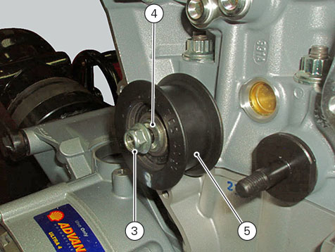

Refitting the cylinder heads pulleys/idler pulleys
Check that the keyway on the end of the camshafts is in good condition and without burrs.
Fit a key (B) in the keyway of each camshaft.
Fit the pulley (2) on the camshaft, inserting the key in the in the pulley slot (C).
Apply the recommended grease to the threads of the camshaft.
Repeat the procedure on the other camshaft.
Insert the tool (D) no.
88713.1806
into the pulleys to prevent their rotation.
Apply the recommended grease to the mating face of the ring nut (1).
Fit the ring nut (1).
Carry out the same operations on the other camshaft.
Important
Always fit new nuts on reassembly.
Use the bush supplied with tool no.
88713.1806
, together with a torque wrench to tighten ring nuts (1) to 71 Nm (Min. 64 Nm - Max. 78 Nm).
Insert idler pulleys (5), with bearing and washers (4), in the pins on the cylinder head and tighten nuts (3) to 25 Nm (Min. 22 Nm - Max. 28 Nm).

Undo the locking screws (6) of the pulleys, by turning them counter clockwise by 90° ± 5°.
Check that the pulleys have no end float and can rotate freely at all points along the full length of the slots.